CIVITAS: CREATE HORIZONS
Civitas: Create Horizons var det sista Create-baserade modpacket som spelades i Create >6.0.X och Minecraft >1.21. Civitas: Create Horizons var det första modpacket med Create: Northstar-tillägget.
- 
Forge
Minecraft 1.20.1

Create 0.5.1+
Info:
- Create Horizons
-
Create Horizons